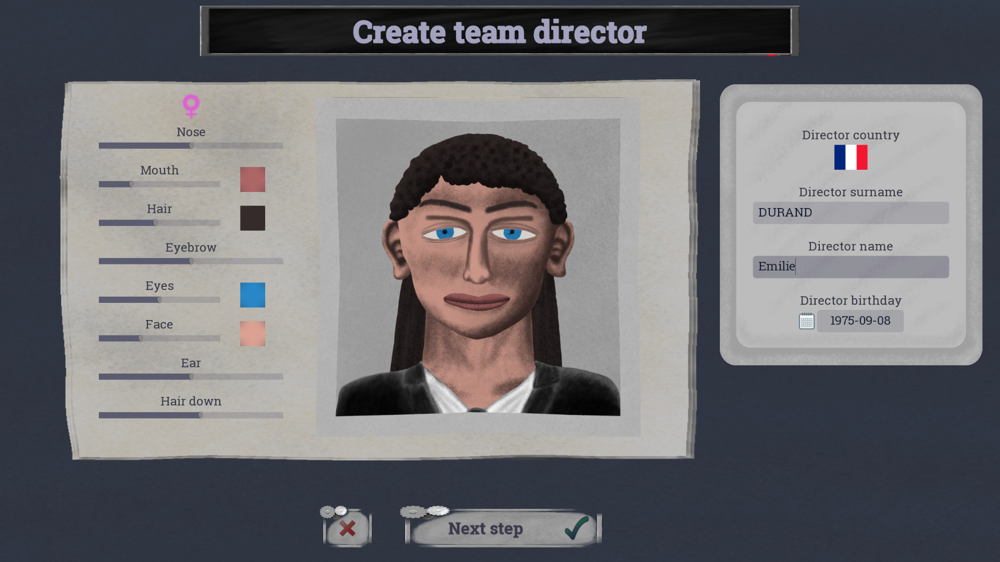
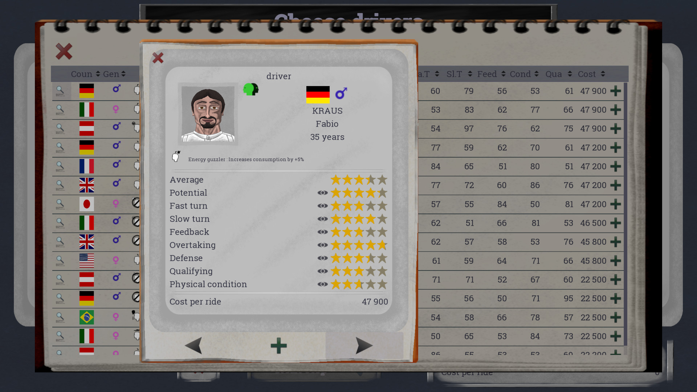
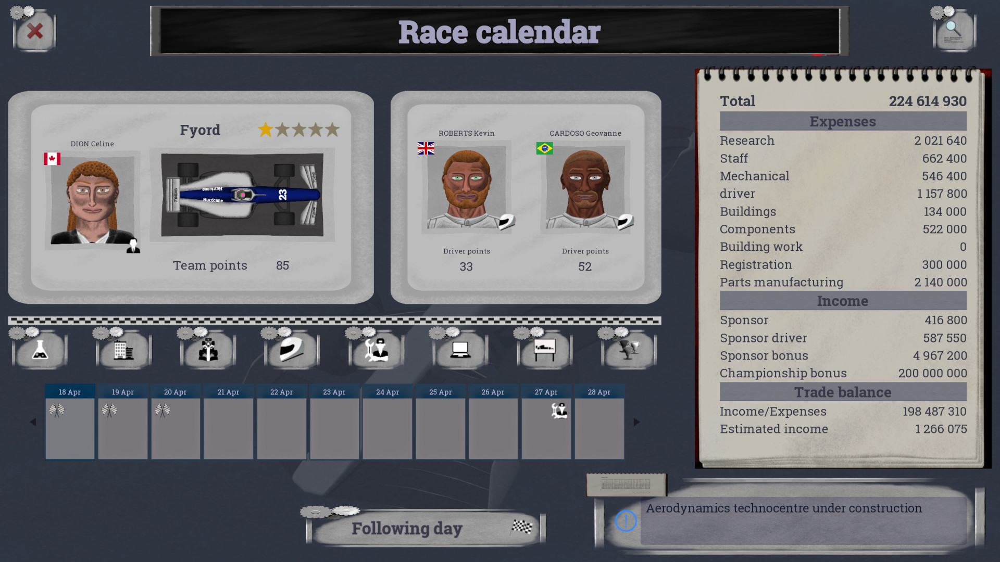
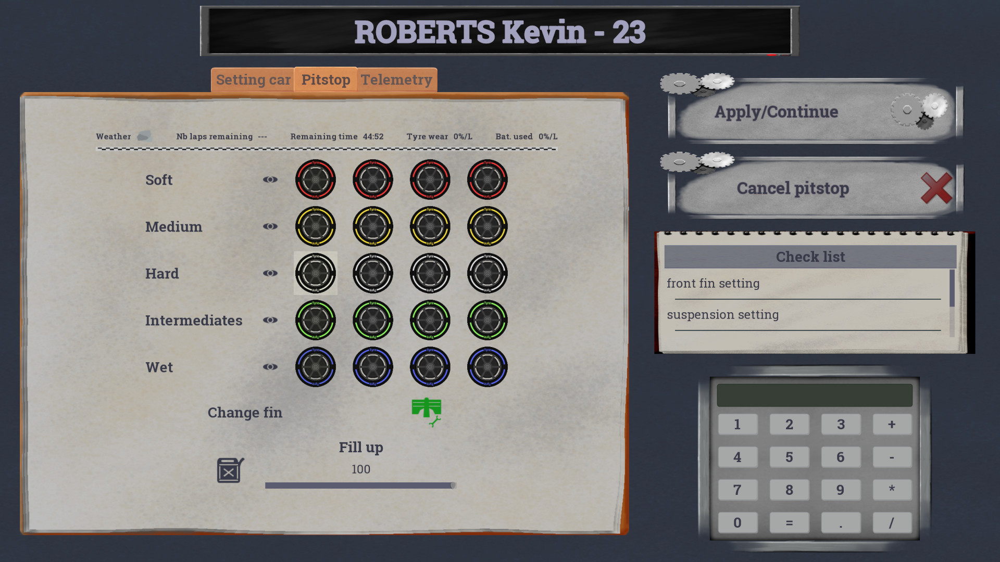
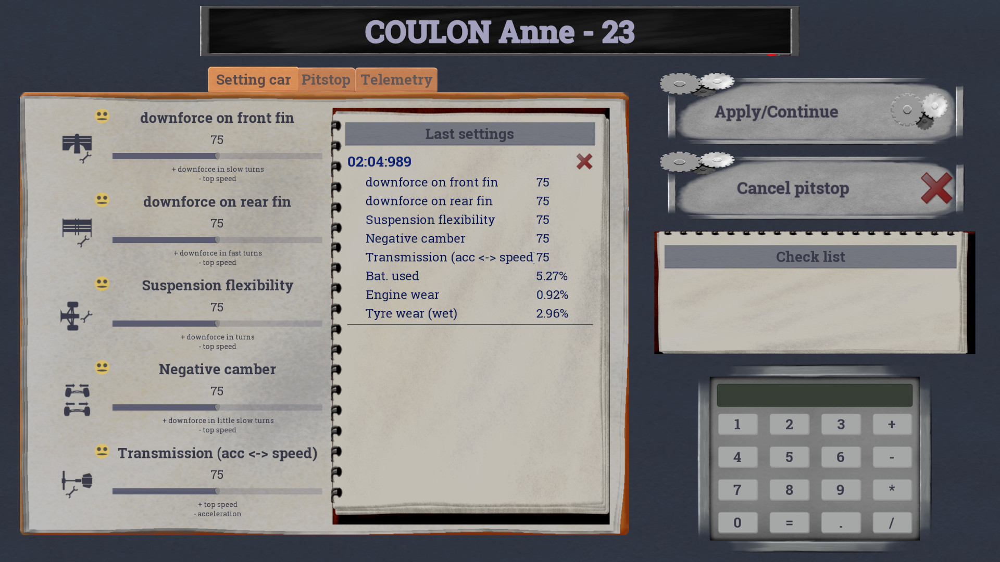
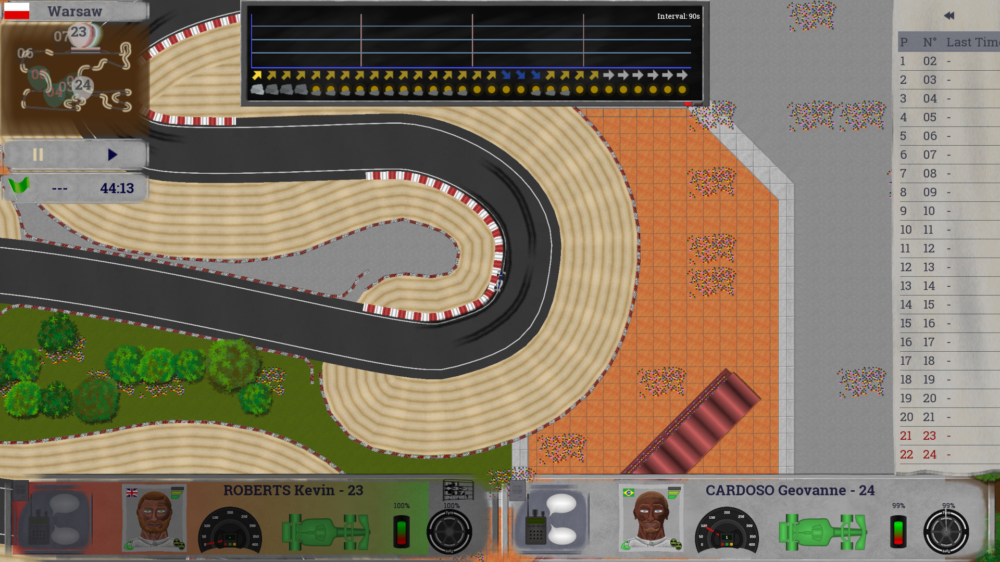
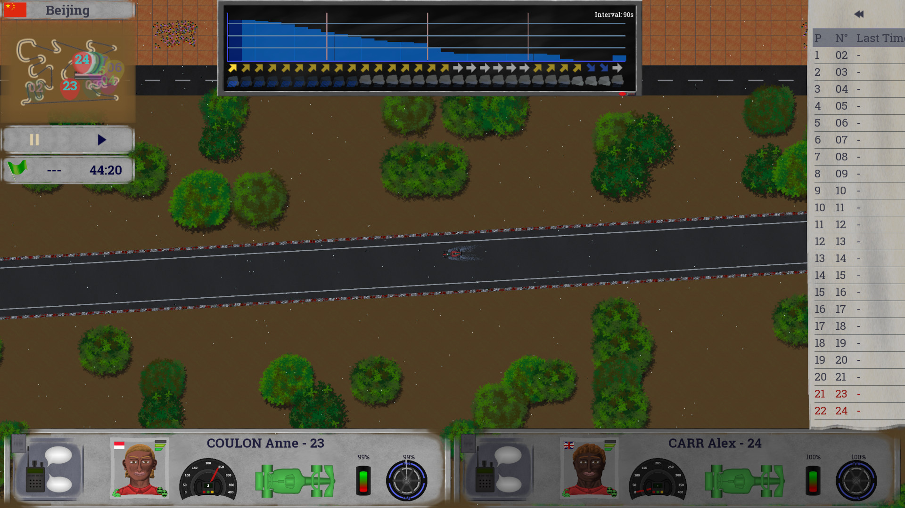
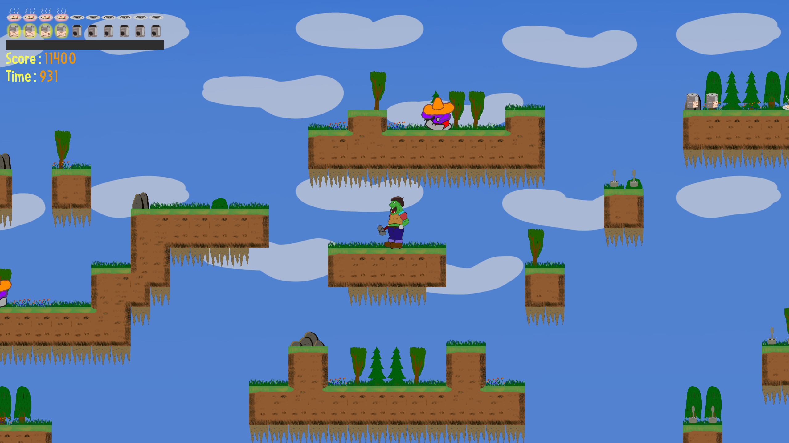
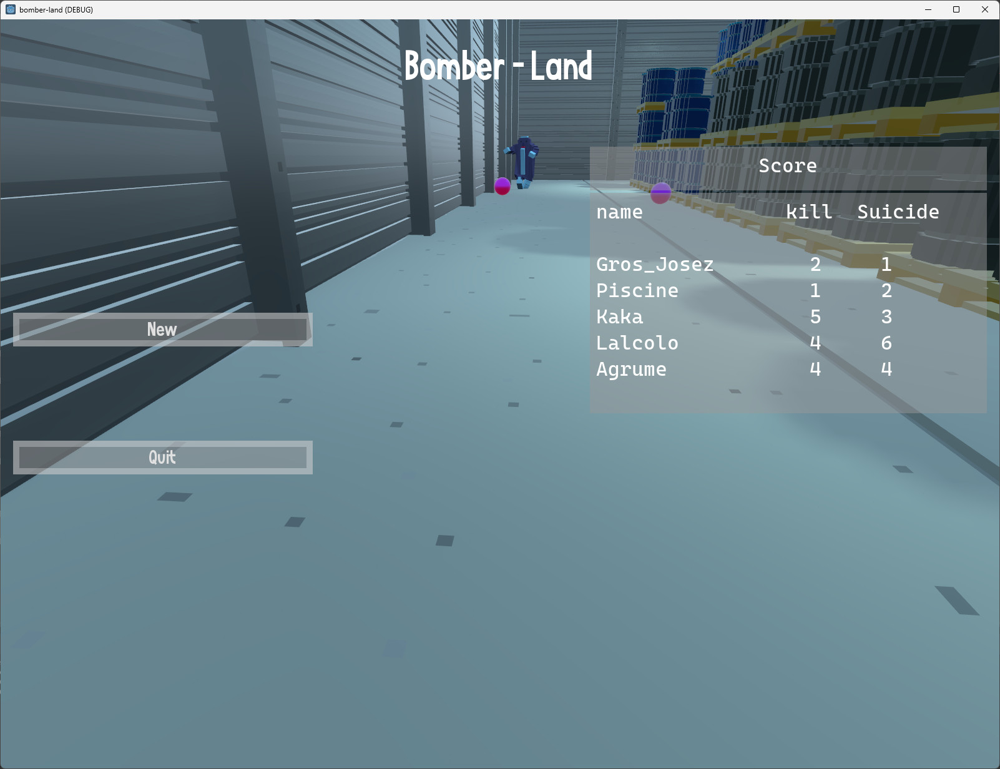

Presentation
I am PELLIER Daniel, an independent developer from the software world. Since adolescence I created board games, with my experience acquired in development and my "teenage dream", I told myself and why not take the plunge. Houbi Game is a small company created in December 2022 which aims to create video games of all kinds.
Realization
Race Manager
Available on itch.io
You take on the role of a manager of a single-seater team. Experience race weekends and manage your site and your staff.







Prototyping and testing
Another castle
Hello, I wanted to introduce you to my very first delirium. I needed an example to start getting started with Godot Engine and what better than a platformer. So here I am throwing. This first experience was rich in meaning, already to learn a little "game dev" vocabulary and above all it made me laugh. My github link for those who are interested, well it's Godot Engine 3.x from 2020, but the sprites are timeless.
The project under Github

Bomber Land
Hello, I wanted to show you my second prototype to experiment with 3D. The angle calculation frankly confused me and there is still some difference with 2D / 3D. What better than Bomber Mans to start learning. Still in Godot Engine 3.x.
The project under Github

Legal Notice
Company name: Houbi Game
Headquarters: 3 Avenue François Chancel 72000 Le Mans
Email address: contact@leboudoircocooning.fr
Legal form: SOLE BUSINESS
Director of publication: M PELLIER Daniel
Company creation: December 2022
SIRET: 49479596600030